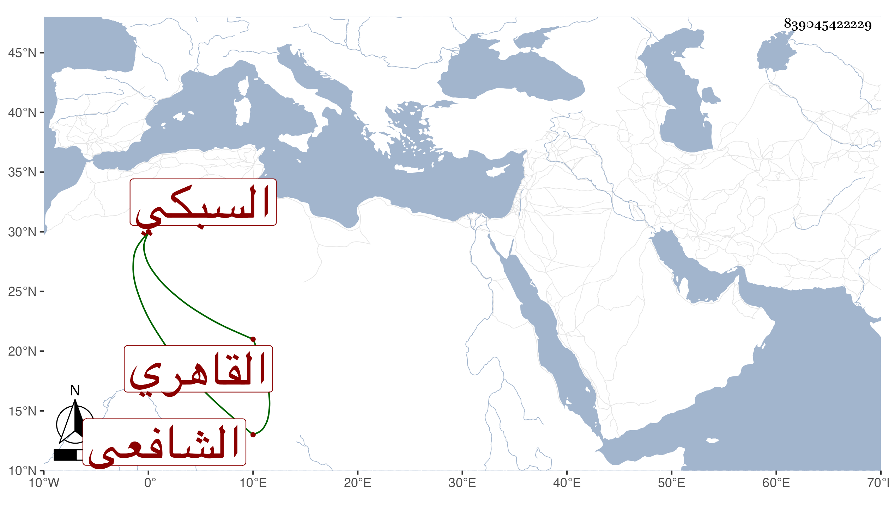

0902Sakhawi.DawLamic.ITO20230111-ara1.EIS1600.839045422229
Biography ID: 839045422229
545
محمد بن محمد بن محمد بن عبد البر بن علي بن تمام الجلال بن البدر بن أبي البقاء السبكي الأصل القاهري الشافعي الماضي أبوه . ذكره شيخنا في إنبائه فقال : ولد قبل سنة ستين وسبعمائة واشتغل في صباه قليلا وكان جميل الصورة لكنه صار قبيح السيرة كثير المجاهرة بما أزرى بأبيه في حياته وبعد موته بل لولا وجوده لما ذم أبوه. وقد ولي بعده تدريس الشافعي بجاه ابن غراب مع بذل دار تساوي ألف دينار بل ولي قبل ذلك تدريس الشيخونية بعد الصدر المناوي ببذل جزيل لنيروز ناظرها حينئذ . مات في جمادى الأولى سنة إحدى عشرة سامحه الله .
